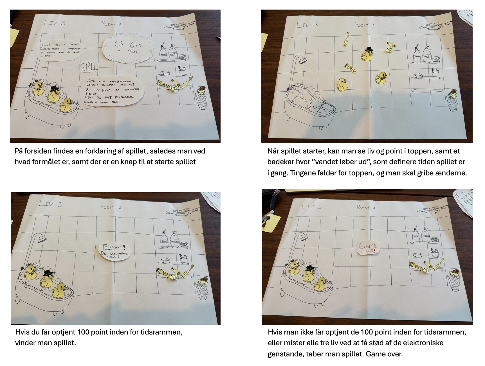
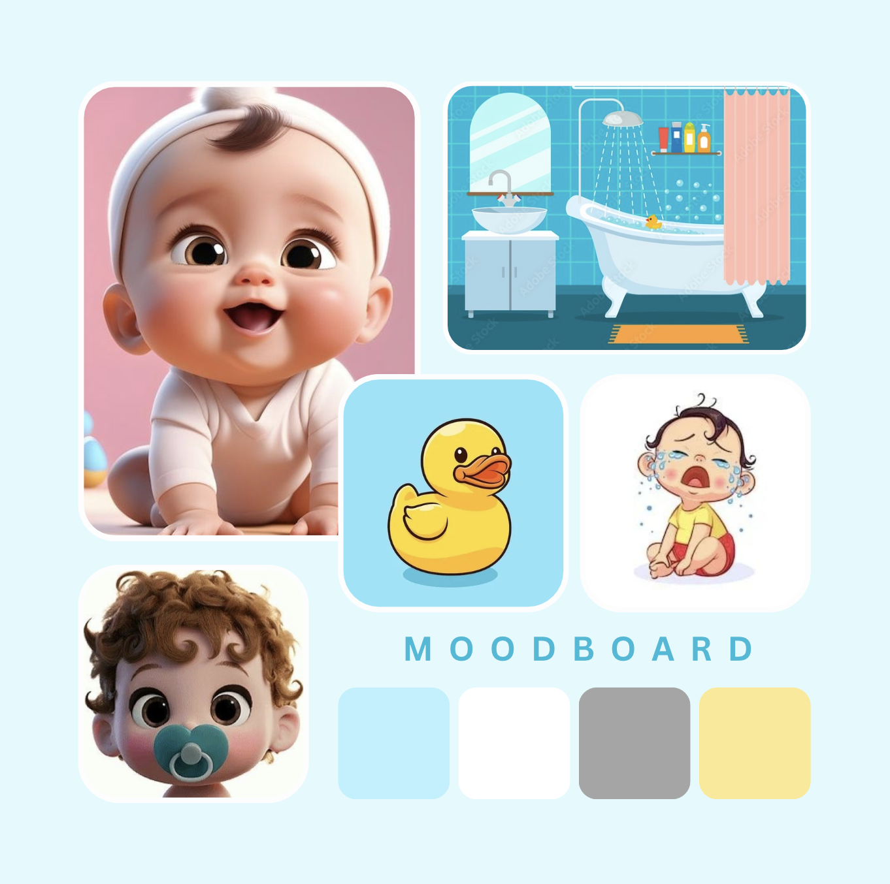
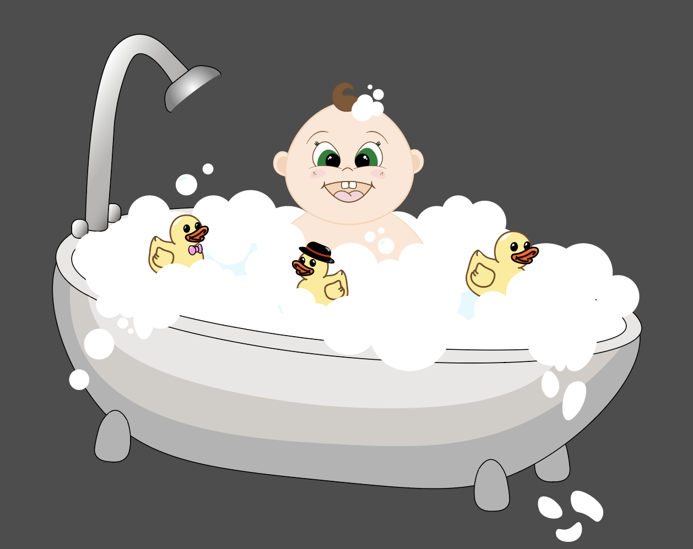
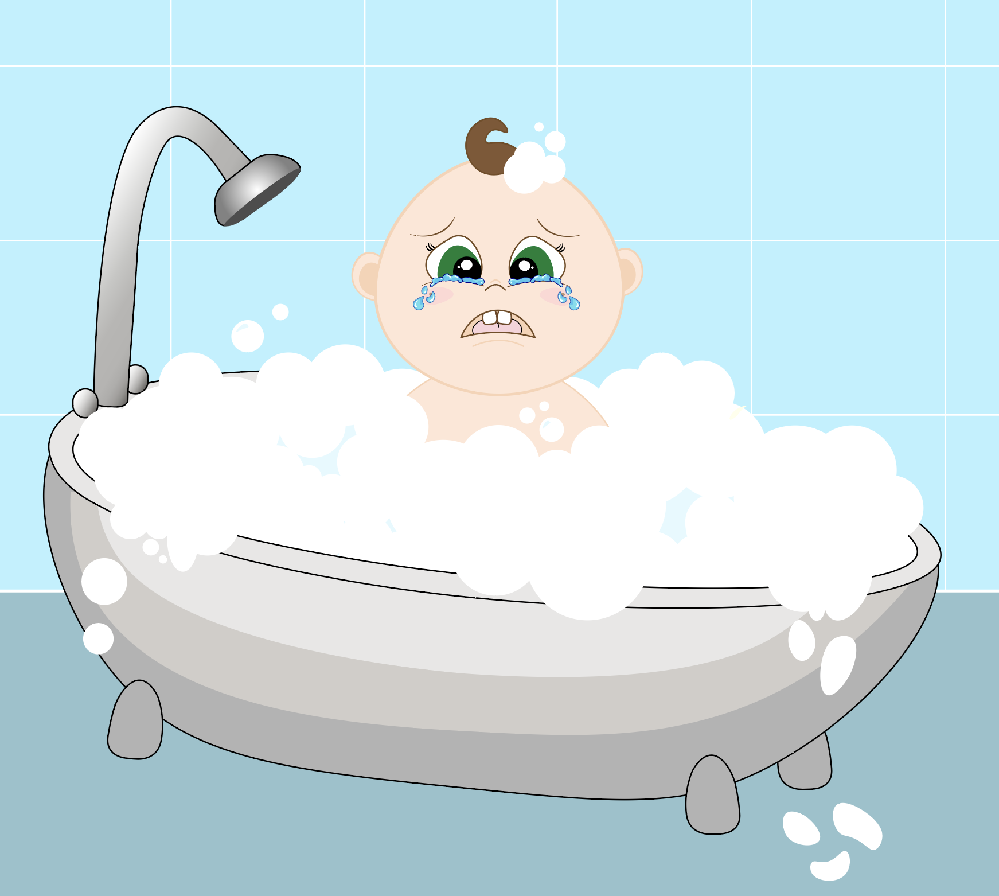
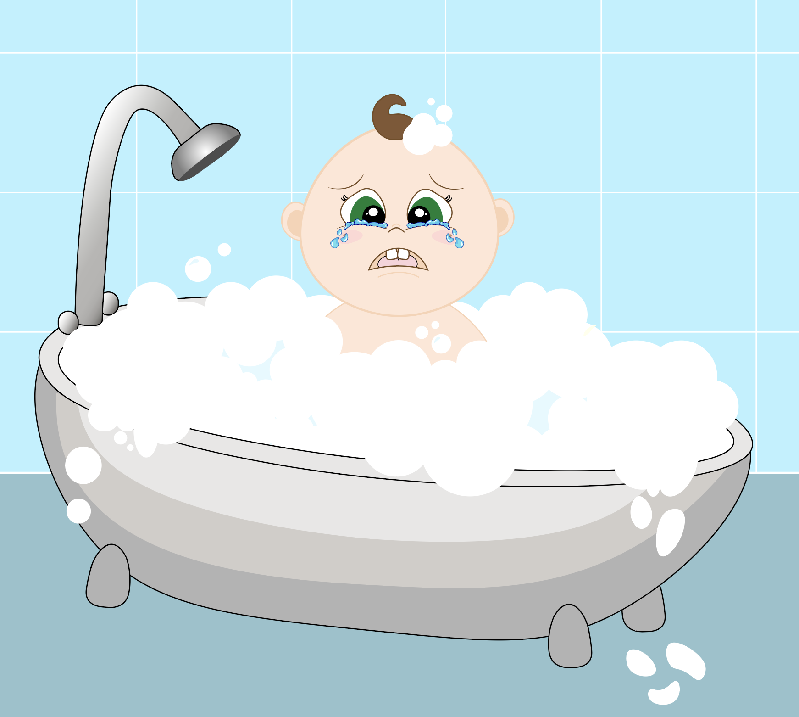
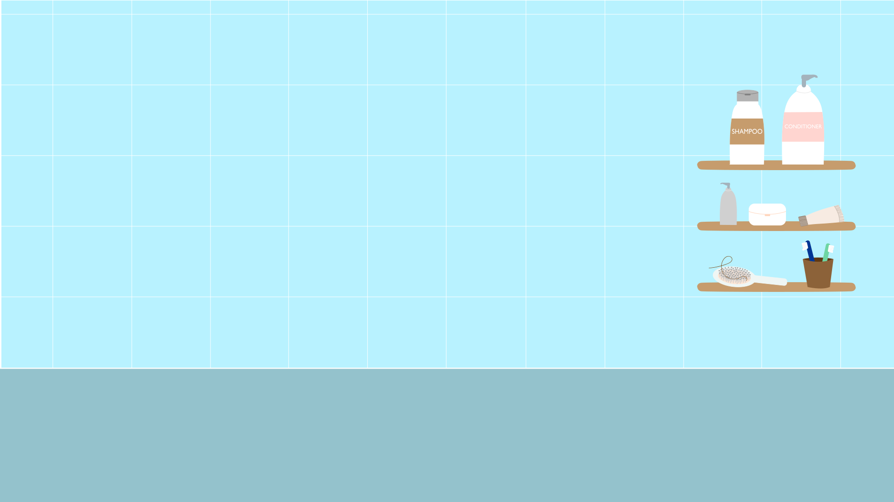
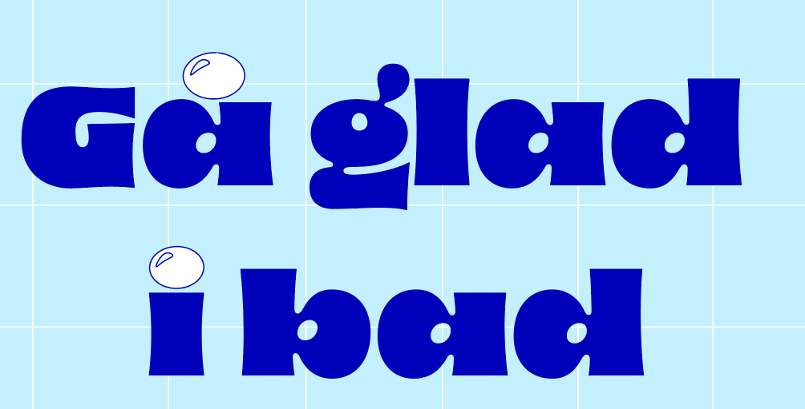

Spillet
Jeg fik ideen til at udvikle et spil baseret på et badekar og
nogle badeænder, hvor målet er at fange så mange som muligt inden
for en tidsbegrænsning. Spillet går ud på, at spilleren skal
navigere og forsøge at fange badeænderne, som giver point. Men der
er også en udfordring: blandt ænderne dukker elektroniske
genstande op, som spilleren skal undgå, da de koster både point og
liv. Ideen er, at spilleren skal balancere mellem at samle point
ved at gribe badeænderne og undgå de farlige genstande for at
holde sig i spillet længst muligt og nå målet.
Grund ideen
Sørg for at gribe badeænderne inden tiden løber ud. Dog skal du
passe på du ikke får grebet en af de elektroniske genstande, da
disse vil give stød og miste dig et liv. Optjen 100 point for at
vinde spillet. Hver bade and er 10 point, mens hver elektronisk
genstand mister dig et liv og 5 point. Hvis ikke du når de 100
point inden tiden er gået, eller du mister alle liv, taber du
spillet.
Prototypen
Herefter udarbejdede jeg en prototype af mit spil, for at kunne
visualisere min vision.

Spillets opbygning
For at have en klar forståelse af hvordan spillet skal bygges op,
lavede jeg et aktivitetsdiagram. Dette gjorder det muligt at
tydeliggøre hvad selve ideen med spillet og des spilleregler er.
Herved fik jeg også fastlagt hvilke elementer der skulle være med
i spillet.

Designprocessen
Efter at have udviklet min prototype begyndte jeg at finjustere og
videreudvikle på det endelige design. Jeg besluttede at fastholde
den stil, jeg allerede havde valgt i prototypen, da den afspejlede
præcis den visuelle retning, jeg ønskede for det færdige produkt.
For at understøtte denne proces lavede jeg et moodboard, som
illustrerer den stil og atmosfære, jeg sigtede mod. Det bærer
tydeligt præg af lyse og afdæmpede farver, kombineret med bløde,
runde former og et sødt og indbydende udtryk, der giver designet
en let og legende stemning.

Figur
Da jeg kom i gang med designet, indså jeg, at et badekar og
badeænder alene ikke var tilstrækkeligt til at skabe den ønskede
atmosfære. Derfor besluttede jeg at tilføje en babyfigur, der
sidder i badekarret. Dette gav mig mulighed for at videreudvikle
det “nuttede” univers, ikke kun gennem badeænderne, men også ved
at lade karakteren selv bidrage til den søde og indbydende
stemning. Mit karakterdesign er baseret på “baby bias” – altså
designtræk, der fremhæver de søde, barnlige kvaliteter, der skaber
en umiddelbar tiltrækning. Jeg har derfor givet karakteren store
øjne, runde former, en lille næse og bløde ansigtsudtryk for at
opnå et indtryk af uskyld og nuttethed. Dette designvalg
understøtter hele spillets visuelle udtryk og bidrager til en varm
og legende atmosfære.

 

Former
Jeg anvender gennemgående bløde former i hele mit design for at
skabe et harmonisk og roligt udtryk. Designet har et look, der
kunne minde om noget, man kunne klippe ud med en saks, men
detaljerne og de præcise linjer afslører, at det er lavet
digitalt. Disse små nuancer, som kun en computer kan opnå,
bidrager til en balance mellem et håndlavet og digitalt look, der
fremhæver det moderne, men samtidig indbydende udtryk i designet.
Farver
Den valgte stil med “baby bias” og de farver, jeg har brugt,
hænger nøje sammen. Jeg har valgt rolige, blide farver, som ikke
er for skarpe, for at fremkalde en følelse af varme, blødhed og
tryghed. Ved at benytte dæmpede og lyse nuancer, skaber
farvepaletten et afslappende og behageligt visuelt udtryk, der er
nemt for øjnene. Dette farvevalg understøtter det “nuttede”
univers og forstærker designets indbydende og beroligende
atmosfære.

Typografi
Jeg har valgt at bruge en tyopgrafi som er meget i stil med resten
af design tankegangen. Skriften har bløde og runde former, og er
samtidig tykkere for at give det mere "nuttede" udtryk. Skriften
er blå så den passer til resten af universet, men for at fremhæve
denne, er det en mørkere og mere markant farve. Herved er den også
nemmere at læse for brugeren.
